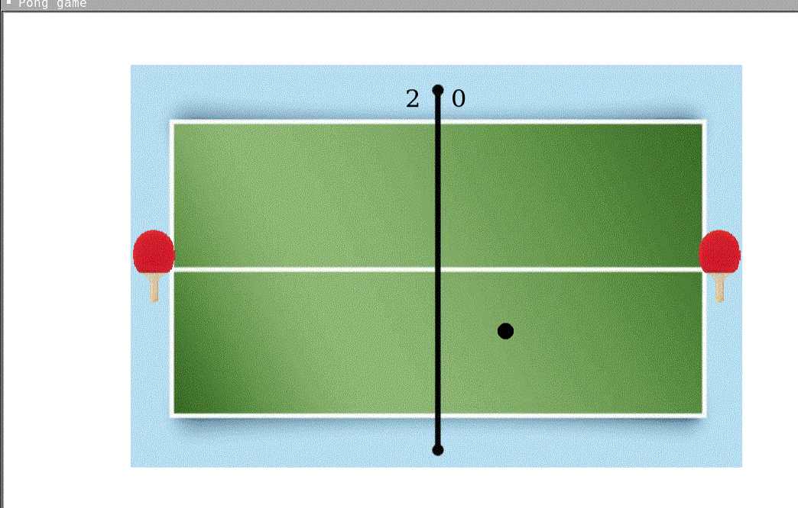
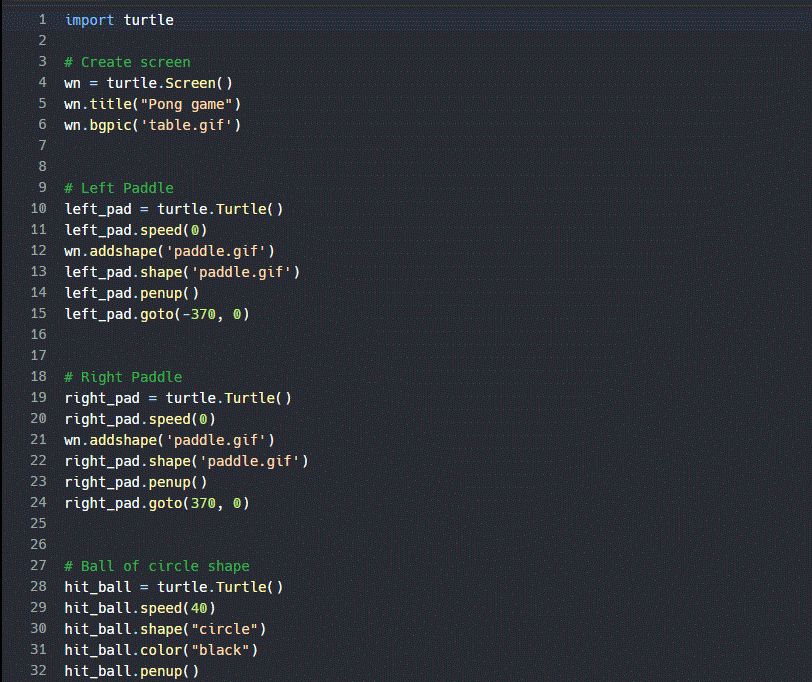
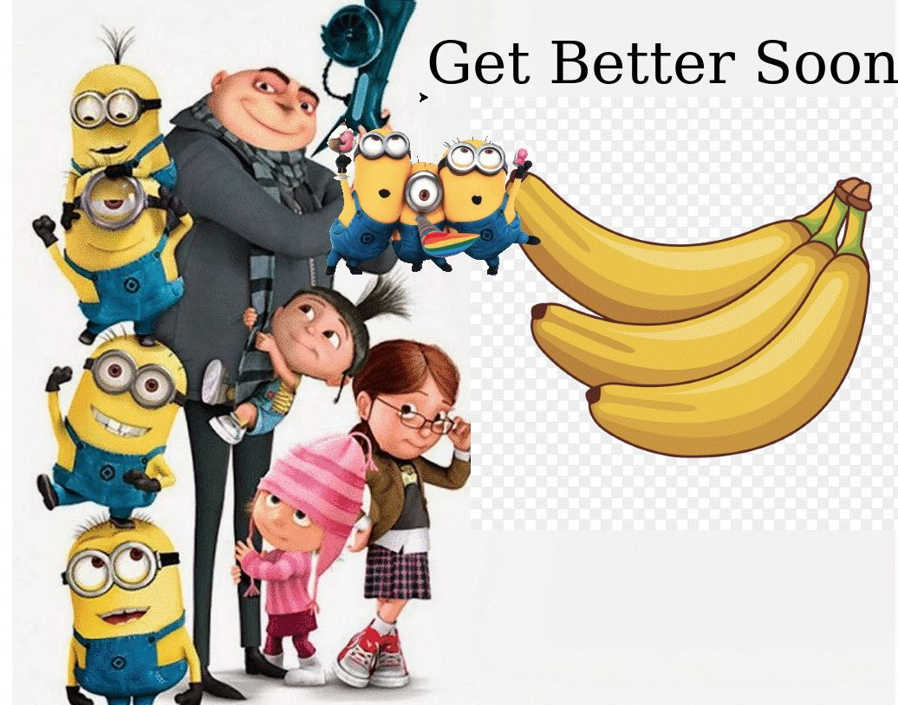
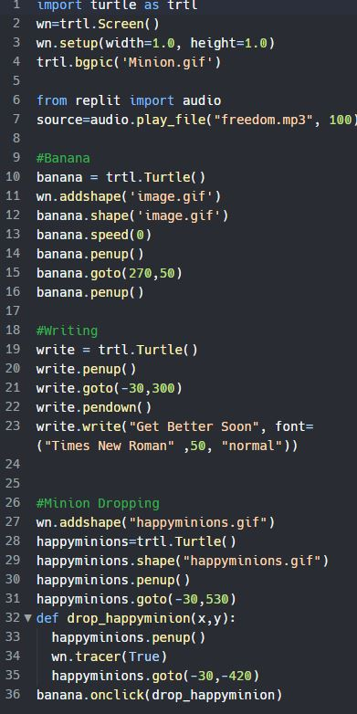
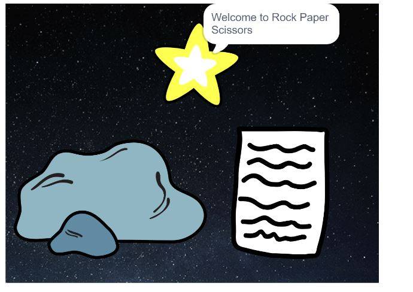
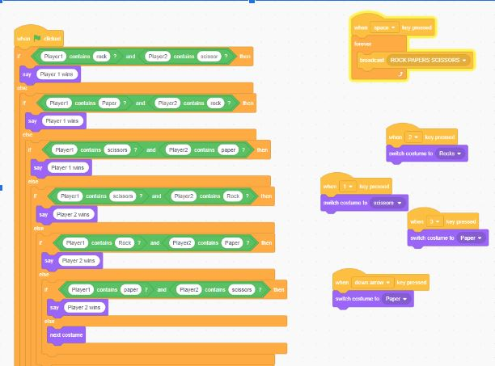
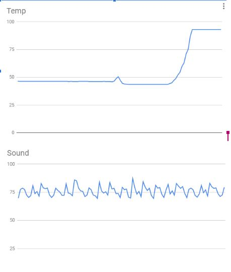
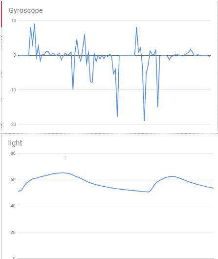
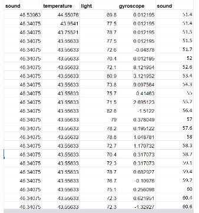

Home
Portfolio
About Me
This is my Portfolio Page!
My 1.1.9 Project: CUP CAKE MAKER .


This my is cupcake maker program. To make the cupcake you get to pick the cake flavor, next the frosting flavor, then which topping you want then finally pick the sprinkle flavor.
This is my 1.2.5 Project: Ping Pong .


This is our game Ping Pong where you try and hit the ball back and forth. If you miss then your opponett gets a point.
1.3.1 Project: Greeting Card.


This is my greeting card to a childrens hosiptal. It is a minions themed card. When you click the banana a trio of happy minions goes down the screen.
Scratch Project.


This is Rock Paper Scissors coded through scratch. When you press certain keys it switches between options. It is a two player game so when one person WINS then it will either say Player1 wins or Player2 wins.
3.1.6 Project:Rover Phone Home .



This project we were given a spread sheet of data that represent 4 categories. First, we split the data into those four catergories. After, we put the four data sets into graphs. Finally, from the graphs we compared them to teh descirption of each area. In which we concluded that ther rover collected data from the Inlands.
.
.
.